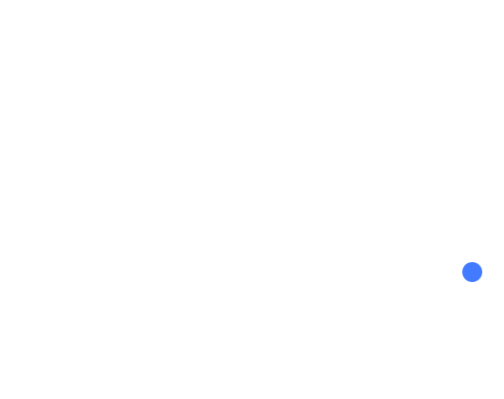

Start with the official Trap, Live and Boom Bap kits or import your own audio, assign it to any of 64 pads, sequence beats and notes, play the Native and Prism instruments, record and autotune vocals, arrange clips, mix up to 128 tracks, record your microphone or your performance, and export WAV audio. Install the studio to your home screen to use it full screen and offline.
Save stores the project and audio in this browser. “Project + audio” downloads a portable file that includes the sounds. Keep a downloaded copy before clearing browser data. Browser portable bundles open in this web studio. “Desktop JSON” exports project metadata for the native app; audio must be relinked there, and browser master effects need to be recreated. Native desktop projects reference local files: import those sounds here, select an imported replacement in the library, then use the missing pad’s options to relink all references.
Recording: MIC captures your microphone or audio interface as uncompressed audio, with an optional count-in and input monitoring; arm a Song row to record a clip in time with the song, or record with no armed row to fill the selected pad. PERFORM captures pads and keys you play into the current pattern while it loops, with each take undoable as one step. Each pattern can carry its own instrument.
Vocal: RECORD TAKE counts in, starts your beat and records a dry take onto the Vocals row in time. Turn INPUT on for the tuner; DRY or TUNED monitoring lets you hear yourself (tuned = live pitch correction) through headphones. Choose the key and scale or use the detected key, pick a style (Natural, Pop, Hard tune) or set strength, retune speed, humanize and cleanup, preview with A/B, then APPLY TO TAKE. Autotune and cleanup are the desktop app’s own processing; the dry original always stays in the library.
Shortcuts: Space plays/pauses; double-tap Space restarts from the top; 1–8 trigger pads 1–8, Q–I trigger pads 9–16; [ and ] switch pad banks A–D; Musical typing is active on Instruments & Notes; Ctrl/Cmd+S saves; Ctrl/Cmd+Z undoes. Shortcuts pause while typing in a field. Stop releases all voices. No overlap (enabled by default on phones) makes each pad, sample preview or piano tap replace the previous manual sound. Turn it off for chords and layering. Song playback keeps its arranged parts.
Desktop-only: plugin hosting, stem separation, the Rubber Band (v2) pitch engine and manual pitch edits, vocal comping, audio-device routing, mixer group gain/mute, and native DSP effects that are not present in the browser mixer. Native project settings are retained, but these processors are not reproduced by Web Audio. Groups that mute or change track gain block transport and WAV export; render those parts to audio in the desktop app first.
Choose light/dark and any accent. The accent also tints the shell surfaces so the full interface follows your customization.
Use your browser menu to add this studio to your home screen.
Installed, the studio opens full screen without browser bars, keeps working offline, and stores projects and audio on this device. Microphone recording still asks for permission the first time.